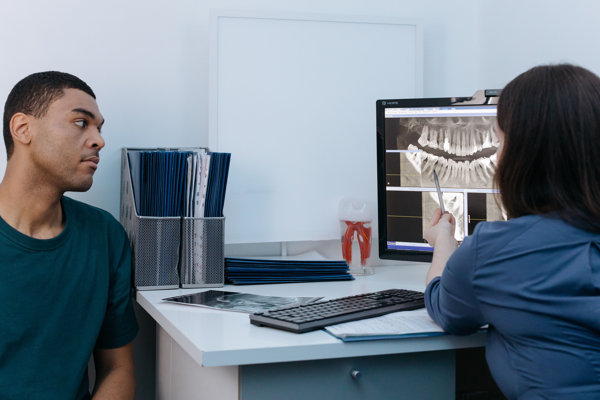

Every reaction, anticipated.
A more ambitious scroll-driven motion study for the VERA experience — an isolated prototype, not the production site.

Nothing about your visit should feel like a procedure that's simply happening to you. We walk through it first — out loud, in plain language.
Three quick examples of how VERA adapts to what you tell it — select one to see how. This is a working demonstration: nothing you select is recorded or sent anywhere.